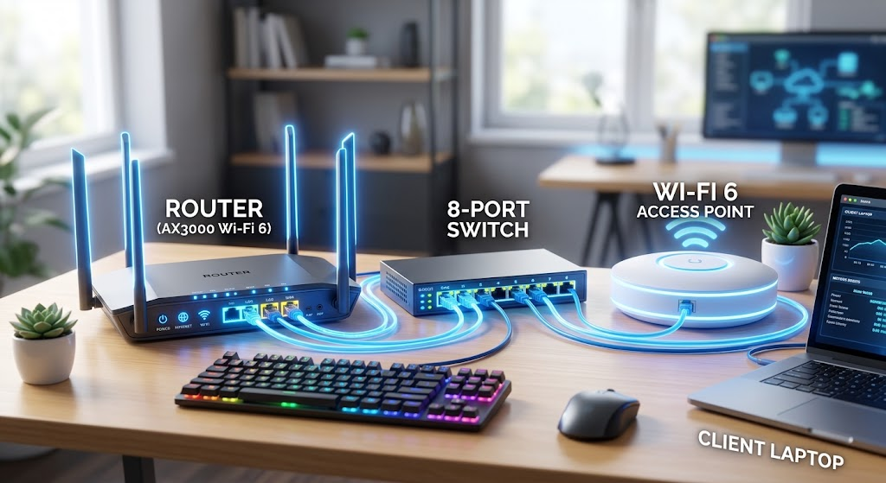
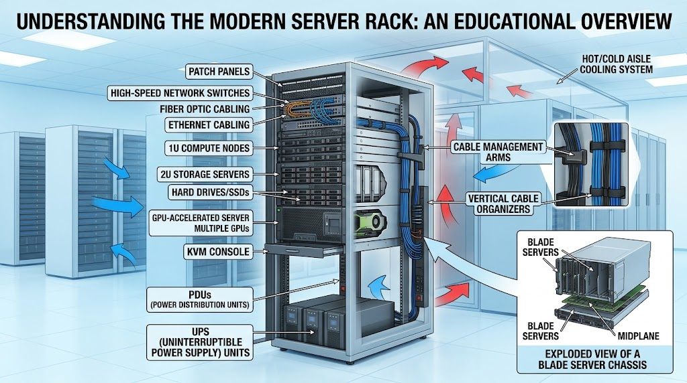
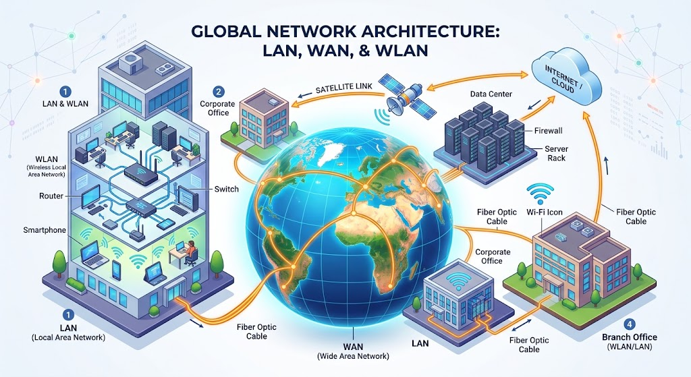

Aprende los fundamentos de cómo se conectan los dispositivos en el mundo digital.

Las redes se clasifican principalmente por su alcance geográfico y el medio de conexión que utilizan:
Red de área local. Conecta ordenadores y dispositivos dentro de un área geográfica pequeña, como una casa, oficina o escuela. Suelen ser rápidas y muy seguras.
Red de área amplia. Conecta redes LAN a través de grandes distancias geográficas (ciudades, países o continentes). El mejor ejemplo de una red WAN es el propio Internet.
Es una red de área local pero inalámbrica. Utiliza tecnología de radiofrecuencia (como el Wi-Fi) en lugar de cables para conectar los dispositivos de una zona local.

Para que una red funcione, necesita hardware especializado que dirija y gestione el tráfico de datos. Aquí están los más importantes:
Es el "director de tráfico". Conecta múltiples redes entre sí (por ejemplo, tu red doméstica a Internet) y decide la mejor ruta para enviar los paquetes de datos a su destino.
Opera dentro de una sola red (LAN). Conecta múltiples dispositivos por cable (computadoras, impresoras) y envía los datos *solo* al dispositivo específico que los necesita, haciéndolo muy eficiente.
Permite que los dispositivos inalámbricos (smartphones, laptops) se conecten a una red por cable. Expande la cobertura del Wi-Fi creando una WLAN que se enlaza a la red alámbrica.

Un servidor es una computadora de alto rendimiento, o un programa informático, que proporciona funcionalidades ("servicios") a otras computadoras o dispositivos, conocidos como "clientes".
Existen muchos tipos de servidores: servidores web (que almacenan esta misma página web para que la veas), servidores de bases de datos, servidores de correo, entre otros. Están diseñados para funcionar las 24 horas del día, los 7 días de la semana, manejando grandes cantidades de información y peticiones simultáneas.